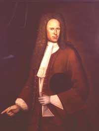

|
by Stefan Bielinski Evert Wendell was born in Albany in 1681. He was the second son of shoemaker and trader Jeronimus (Harmanus) and Ariantie Visscher Wendell - both members of the first generation of Albany-born children of New Netherland.  His father died in 1690 leaving his widow and coming-of-age sons to further his business enterprises. While still an adolescent, Evert began to trade with both Native American and settler clients. His account book covering the years 1695 to 1726 details almost 2,000 transactions. In 1710, at age twenty-nine, Evert married young Engeltie Lansing. Several years older than most Albany grooms, he had spent considerable time trading on the frontier beyond Albany. After his marriage, he settled down in Albany. Between 1711 and 1734, ten children were born in their upper State Street home. Initially, Evert Wendell made his way in the public arena by selling "strong liquor" and other items and performing chores for the Albany government including auditing books and collecting taxes. But after he appeared for his mother in a case against the city in 1703, he began to build a following as an attorney who represented his Dutch speaking neighbors before Albany courts. Known as a lawyer, he would continue to practice law in the Albany area for the remainder of his life. Wendell was elected to the Albany Common council in 1712 - serving as assistant alderman for the first ward for several years. Over the first half of the eighteenth century, his home was an Albany landmark. In July 1749, Evert Wendell filed his will. It detailed some of his extensive holdings as he parcelled them out to his sons and daughters. He died in 1750 and was buried in the Dutch church cemetery. An able representative of the third generation of one of early Albany's principal families, this Evert Wendell was an Albany insider who combined business sense and legal skills to transform his family fortune into real estate - not the least of which was a large chunk of city land from State Street south to the Beaverkill.
His business records are partially detailed in an account book in the collections of the New-York Historical Society. >Portrait of Evert Wendell attributed to Nehemiah Partridge and dated 1718. In the collection of the Albany Institute of History and Art. Nine Wendell portraits are reproduced and considered in Janet R McaFarlane, "The Wendell Family Portraits," The Art Quarterly (Winter 1962), 385-92.
last updated: 5/15/09 |